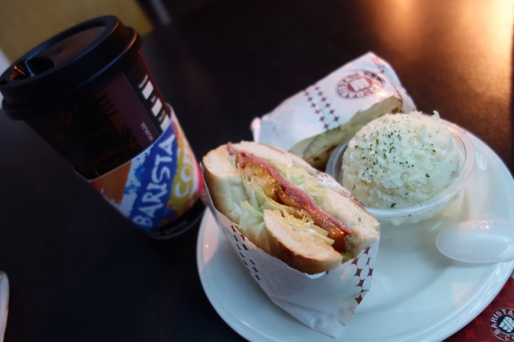
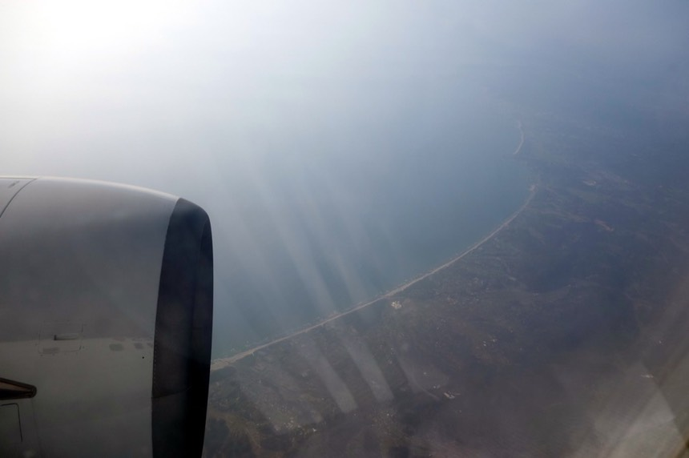
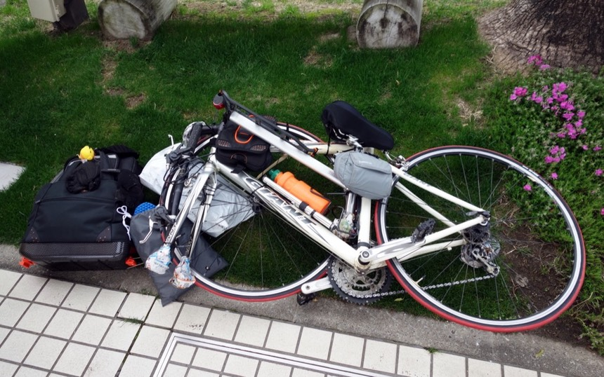
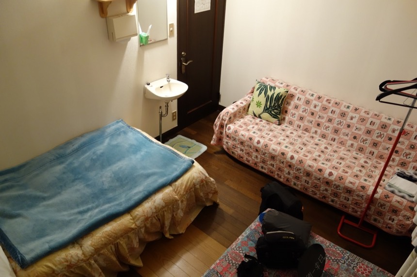

3月21日，旅行第一天。今天就抄襲米莎莎想的標題，下午一點五十的飛機，所以整個早上都很悠閒。
想說既然都沒什麼事，那不然來安排一下行程好了～（喂～有點悠哉過頭了吧）
再此之前，唯一有安排的行程就是第一天的住宿地點，旅行的第一天總是比較忙亂，
要託運行李，要從機場進市區，要組合單車，很多有的沒的一起來的時候真是手忙腳亂。
總之就這麼悠閒的躺在沙發上，等米莎莎睡醒，買完早餐回來，我已經大致排好了前十天的旅程。
機場接送的車很準時在11點半的時候抵達，不塞車的話，從我們家到機場只要25分鐘。
等一下還有飛機餐可以吃，所以辦完報到手續之後，就跟米莎莎簡單吃一份燻牛肉貝果搭配拿鐵咖啡。

這貝果的水準真高，還附贈馬鈴薯沙拉。
這次時間抓的剛剛好，下午1點20開始登機，我那時候剛通完關，不用花太多時間等候。
從桃園飛到宮崎只要短短的1小時50分鐘，路線是這樣子的。
路線斷斷續續的，GPS可能有點怪怪的，雖然GPS的紀錄軌跡不影響旅行，嚴格來說它的存在反而讓人多了一個要煩惱的東西。
但我還是希望它可以好好的工作，把我迷路亂騎冤枉路這樣的行程給記錄下來。
今天要搭的飛機是這輛波音737-800，算是小飛機，但是比廉價航空舒適太多了，還有飛機餐可以吃～（歐耶）
看著轉盤把行李一件一件送上飛機，就想說不知道我的單車紙箱在哪？
就這麼巧看到它被拖過去，越晚上飛機的行李，就會越早被轉出來，這是一個後進先出的概念。
這飛機有八個比較高級的座位，剩下150個都是三排座，看起來也許不大，但坐起來很舒服，腳也可以伸的直直的。
因為晚睡加上早起，所以很愛睏，坐著沒多久就默默的睡著，起飛時換了個姿勢睡，吃飛機餐時才醒過來。
吃不出來是地瓜還是南瓜的肉絲米粉，附一顆番茄、一片火腿的義大利麵沙拉，嘉義的老楊方塊酥-巧克力口味，果汁還有咖啡。
份量不多，兩三下就吃光了，味道不錯，很久沒有搭華航，給予五顆星獎勵。
機上日本人很多，剩下就是台灣旅行團的團體客人，大概1:1，飛了一段時間之後看到海岸線，九州到了。

降落完畢之後，打開手機，順利收到docomo的訊號，也可以正常上網，接下來就靠這張sim卡讓我連上網路，資訊萬歲。
而且很便宜，一天大約25元台幣就可以讓我在日本上網，查查地圖、住宿情報、跟米莎莎保持聯繫。
出境前要寫兩張表格，在飛機上的時候空姐沒有發（或是我睡著沒拿到）
等我寫完的時候，排隊的人龍已經越來越長，應該拿著單子邊排邊寫的說，反正我自己有筆呀。
等出關完畢，可以領行李的時候，行李轉盤上已經有十幾件的行李，我想說單車紙箱哪去了？
就看到地勤推著我的紙箱從面前過～
趕緊攔下，說這箱子是我的，然後就被引導到防疫櫃檯。
我看著櫃檯上面的標誌畫著「植物蔬菜」「肉品」，不知道單車被分類成哪一類呢？
正當我疑惑的時候，又有個地勤走過來，請我把紙箱打開，然後拿著抹布加酒精，居然開始擦起輪胎來。
難道是怕輪胎上面會沾有細菌嗎？
頗普通的一個機場，因為很忙所以沒有好好的參觀。終於通關之後，
推著行李車到外頭看一下，感覺還不錯唷～交通很不繁忙，而且機場前面這條路看起來並不是禁行單車的。
依照我之前的經驗，旅行的第一天通常都是把自己安頓好就拍拍手了，當日沒什麼騎車的機會，正式騎車都是從隔天開始。
旅行了這麼多次，終於可以實現一次，在機場就把單車組合起來，然後騎進市區找住宿地點。
此時是五點半，太陽六點半下山，我越快組好車，就能把握時間在還有天光的時候騎車到旅館。
組車的地點就在機場外面，因為有垃圾桶，所以很自然的成了吸菸區，我默默的佔了一塊地盤開始拆箱拿出單車。
帶上手套拿出工具，開始把小喵號還原成帥氣的樣貌。拿出來的時候是這樣。

因為拆車的時候我很偷懶，踏板沒有拆，後輪也沒有拆，所以組合只有三個步驟，單車的龍頭、前輪以及座椅，收工。
拆下來的這些束線帶還有保護作用的報紙團就先丟進紙箱裡，那紙箱要丟哪裡呢？
當年在巴黎，我是把紙箱撕的爛爛的丟到街頭垃圾桶，當年在蘭州，則是把紙箱藏在旅館的某一層樓想說回程可以用（結果被回收了）
這次就默默的放到垃圾桶的旁邊好了。

結果我車子還沒組完，箱子就已經被清潔人員給回收掉，真好，省下我一個不知道怎麼處理箱子的困擾。

噹吶～組完收工。花了28分鐘，比我預期的要好，託運沒有弄壞東西，組車也沒有弄壞東西或是弄傷自己。
但是這車有兩個小問題，第一是我包包上面掛的小莫古醬，它的繩子被我扯斷了，只好把它跟小雞掛在一起。
第二個比較嚴重，後面那個「日本一周」的牌子，居然會卡到後輪呀～非常之危險，所以先拆下來，晚點來想一下怎麼掛才不礙事。
跑回機場大廳的廁所把空空的水壺裝滿一瓶帶著喝～
旅行正式要開始啦～
此時還不到六點，有很充分的時間可以騎車去旅館，這次有帶一台最低階的GoPro Hero，所以有騎車的影片可以看喔（不是很有趣就是了）
因為是第一天，所以很認真的錄了全程的影片（約十公里），之後每天會挑著錄影，希望可以錄到一些有趣的東西。
來介紹一下第一天住宿的旅館。
在找宮崎周邊的旅館時，想說這裡價錢真高呀～但是第一天通常都會住旅館換得一個好的開始。價錢高一點也是沒辦法的事。
就在這個謀門特，透過Jalan找到一個很酷的旅館「Ｂ＆Ｂピア」，含早餐的住宿，地點很方便，如果沒辦法在機場組好單車的話，
也可以從機場搭JR到距離兩分鐘的車站「子供的國」再走過來，距離機場僅10公里，是個很方便的旅館。
更厲害的是他的價錢，正常的住宿是3,000円/人（含早餐），但如果是騎單車、徒步的旅行者，只要半價的1,500円！
開始騎的時候夕陽正好西下，10公里的距離根本就跟去樓下買罐可樂差不多，頗開心的往旅館移動，
有了之前騎機車的經驗，左駕已經難不到我啦。中間只有一度想說那個高高的地方是不是高速公路不能走？
可是產業道路的路況好差，後來確認可以走之後，就去騎舒適的道路爽一下～
左邊農田，我騎在產業道路（？）上，右邊的高處是平順的馬路，但我一開始不敢上去騎。
上來之後發現這路沒可能是禁行單車的等級，就很放心的騎在上面。
忠實記錄就是這樣的感覺，實際錄了才發現，GoPro會自動把超過2G的檔案拆成不同的檔案。
簡單的說就算我長時間錄影一段畫面，也會變成18分鐘一段的影像，要合併這些被拆開的影像頗麻煩。
所以我就有什麼直接上傳什麼。
影片我每天都會拍，但是不太可能每天都會上傳，因為影片檔案超大的，若不是住在有WiFi的旅館，靠著用免費的網路應該無法負荷。
而且老實說不是多有趣的影片呀 _(:3 」∠ )_
宮崎機場的好處就是，它跟市區幾乎沒有距離，你開心的話想用走的從機場到旅館也沒問題（但是有接駁車可以搭啦）
騎腳踏車也很方便，中間除了一小段田園之外，蠻快就又進到市鎮的範圍（但郊區跟市區，晚上有沒有路燈都是沒保證的）
到了日南之後，就看到了「子供的國」（就是小孩子國）這個小不啦機的JR車站，那就表示旅館快到啦。
距離車站走路兩分鐘，騎單車的話，就是一個噴涕的距離，到了～～1,500円的超便宜住宿，解決了我第一天的住宿難題。
開門報到之後，老闆會先確認你是不是真的騎車/徒步旅行，然後引導我去後門停單車。
日本一周的牌子被我暫時拆下了，插在睡袋那邊借放一下，太陽一下山，天色就會飛快的變黑。
現在看起來還亮亮的，等我把包包卸下來後，就已經完全是夜晚了。
等一下要騎著輕便的空車去吃晚餐（其實有行李還是很輕便～輕便萬歲～）
拿著大包小包進到旅館，老闆先給了我一裝室內拖鞋，然後說請在上面簽名，這樣就不會穿到別人的鞋子。
因為我的名字很難念日文，Deray就是德瑞，但是德瑞的日文太難發音了，所以這趟旅行我都要借我家貓的名字，稱自己為「莫古」（モグ）
才剛盜用貓的名字，還沒有很適應，所以一簽名還是漏了餡，寫上了Deray。
放下行李，老闆帶我到二樓的房間（房門編號依序是P、I、E、R，我住在E號房），看到浴室有點開心，還有免費的洗衣機、烘衣機。
免費的綠茶、咖啡、巧克力米果甚至還有杯麵可以自己泡來吃。
今天睡雙人房，房間很大，裡面還有沙發跟一個小小的洗手臺。

第一天就這麼順利的打完收工了，平安的託運了單車，組裝完成而且能騎，成功找到旅館而且還是很棒的房間。
放下包包問了老闆這邊有沒有地方能吃晚餐？老闆跟我推薦一家叫「鬼扇」的店，牽出了單車點起紅亮亮的閃爍尾燈出發。
才發現應該帶個手電筒照路，路上實在太黑了（無理～無理～）
有路燈的時候一切都很好，沒路燈的時候真是會怕呢～
「鬼扇」到了～
要不是問了旅館老闆，他也認真的回答了我哪邊有好吃的店家，我還真不會找到這間店（大概去買個超商便當就解決了）
晚餐吃炸雞定食，1,080円。
隔壁坐著東京來的旅行者，來九州衝浪，就邊吃邊聊了起來。很方便聊～因為他會說英文。
我才發現自己的日文實在沒有想像的好，希望可以越來越順口。晚餐也很好吃～
一下子就最後一口炸雞了，日本跟歐洲吃飯的時候，服務生都會說要喝什麼飲料？我都會說開水就好。
這次也不例外，但隔壁的中野請了我喝啤酒，他跟我同歲，是廣告人，每天工作20個小時，所以週末的時候來九州放鬆一下。
根據情報顯示，進擊的巨人將會在今年12月從日本移師到台北展覽，但應該不是把整個環球影城搬過來。
然後他說焗龍蝦很好吃，他又加點了一隻，不急著走的話就留下來吃一點。
我不急呀～這隻焗龍蝦的價錢就超過我的炸雞定食了說。謝謝招待。
回到旅館，跟3C產品們奮鬥了一下（科技始終來自於人性個屁），去洗了舒服的熱水澡。
乾濕分離的浴室，房間內還有提供浴衣（但我沒穿），也有所有你會需要的灌洗用品（但我自己都有準備）
除了沒有泡泡之外，該有的我都自己帶了，有浴缸但是放水太花時間，沖個舒服的熱水澡就很滿足，衣服洗完就丟去洗衣機脫水。
三月底的日本比我預期的熱很多，裡面只穿一件短袖排汗衣，都能熱的讓外套的內裡變的濕黏，這樣下去可不得了衣服一下就臭了。
馬上把內裡給拆下來想辦法塞進行李袋內。若往北騎便冷了再加回去便是。
洗完澡帶著電腦到樓下去，跟老闆閒聊一下。發現他真是一個精力旺盛的人，光是單車加上機車的環日本，他就幹過三次。
還有徒步環北海道（不搭便車，純走路）也幹過一次。另外他還單車環過韓國，
而且也來台灣騎單車環島過，而且還兩次！而且他也徒步縱貫過台灣！我只能說佩服的五體投地。
難怪他對單車/徒步旅行者有這麼便宜的住宿優惠，原來他自己很熱中這樣的旅行方式。
得到大叔的名片一張，我想說他看起來很年輕，一問之下居然已經67歲了。每次看到這樣有體力＆活力的老先生，都很羨慕跟敬佩。
我希望自己老了也可以有相同的體力還有活力四處走透透。
這是旅館老闆環日時的單車。
附上旅館老闆「橋本 靖夫」的個人網站（裡面也有台灣環島的遊記喔）
「ひとりたび―日本の南から北へ」，裡面有很豐富的遊記之外，另外當他不出門在旅館當老闆時，如果遇到單車旅行者住宿，
也會在網頁上介紹他們，貌似有不少台灣單車旅行者住過這間旅館。很推薦這間旅館給來宮崎玩的人。
明天我預定了一個六點半的超早早餐時間（因為我說七點出門，老闆說那六點半吃早餐好嗎？我的日文程度就回答了「嗨！」）
耶～老闆說要把我放在他的網站上，那我也來把老闆放到我的網站好了 ヽ(●´∀`●)ﾉ
本日騎乘：
距離：9.1 公里， 平均：20.8 公里/小時， 時間：27分50秒。
本日花費：
晚餐：「鬼扇」炸雞定食－1,080円
住宿：Ｂ＆Ｂピア－1,500円
總計：2,580円
GPS路線圖：
下一篇：旅立